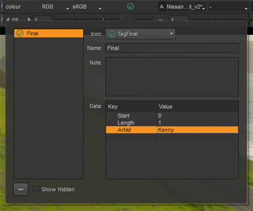
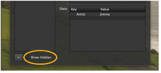

在某些情况下，框架或剪辑上的简单标记可能不包含您希望传递到下一阶段生产的所有信息。向标签添加注释可以提供额外的细节。
警告: 要删除注释，不要单击-按钮，因为它指的是标记。相反，只需删除窗口中的注释，然后单击 “注释” 对话框外部。
| 1。 | 通过单击所需的标记并输入文本或编辑元数据键和值，向标记添加注释。 |
该示例显示了添加到剪辑标记的注释和元数据键 “艺术家”，但您可以以相同的方式将注释添加到框架和时间轴标记中。

| 2. | 在对话框外单击以保存注释。 |
Nuke 工作室 允许您使用 Python API “隐藏” 标签。隐藏标记不会显示在界面中，除非您启用 显示隐藏 在标签弹出窗口中，但是注释和元数据仍然可以访问。

导航到 帮助 > 文档 > Hiero Python 开发人员指南 有关创建隐藏标记的更多信息。
|
|